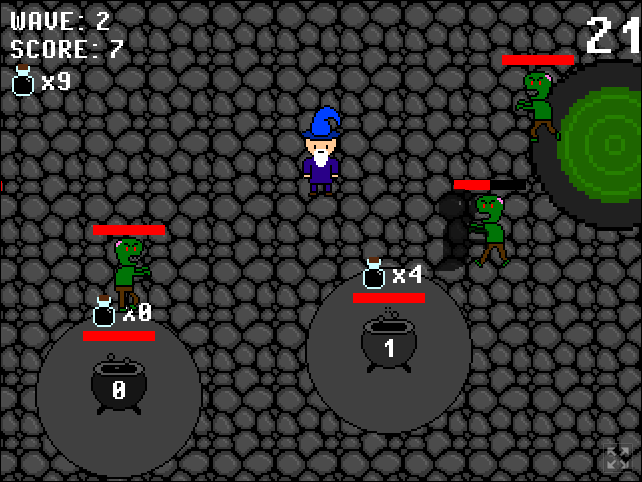

Video Game Development
For about 2 years I've been doing game development in the godot game engine and have published some games on itch.io 2 of them being made for game jam competitions:

PC App Development
Recently I've experimented with making pc apps with wxwidgets and c++. My most recent project is a song player that scans directorys for music files and plays them like a playlist.
Web Development
I've done some web development work using php,html/css, and js for making websites like chat website using mysql and this website.
Other/Experimental
I've also done some minor project for fields like cyber security, embedded systems, and retro console game development.